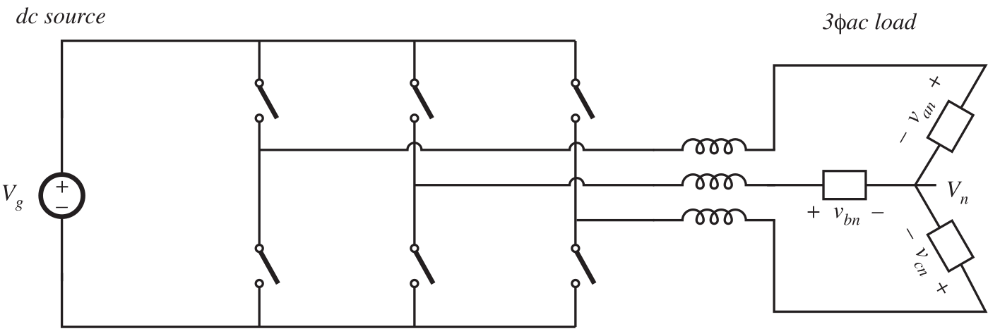

Converter Circuit Manipulation#
In this chapter we answer the following questions:
Where do the boost, buck-boost, and other converters originate?
How can we obtain a converter having given desired properties?
What converters are possible?
Circuit Manipulation#
Inversion#
Let’s revisit our trusty friend, the buck converter whose behaviour was derived from the first principles. We (hopefully) remember that the SPDT switch changes the dc component, and the output low-pass filter removes switching harmonics. The conversion ratio was \(M(D)=D\).

Fig. 78 Schematic of a buck converter.#
Let’s look at the circuit as a two-port network comprised of an SPDT switch and an inductor. In a buck converter, the flow of power is from the source to the load as depicted in Fig. 79.

Fig. 79 Power direction from the source to the load, \(V_2= DV_1\).#
Now, consider the case where we swap the positions of the source and the RC load. The circuit is presented in Fig. 80. In this case the power still travels from the source to the load.

Fig. 80 Power direction from the source to the load, \(V_2= DV_1 \implies V_1 = \dfrac{1}{D}V_2\).#
While we can do this for an ideal SPDT switch, the reversal of power flow requires new realisation of switches. The switches in Fig. 80 can be realised as shown in Fig. 81.

Fig. 81 Power direction from the source to the load with semiconductor switches.#
In this case the transistor conducts when switch is in position 2 If we interchange \(D\) and \(D'\) (the choice of the intervals are really arbitrary) we obtain \(V_1=\dfrac{1}{D'}V_2\).
Attention
Inversion of buck converter yields boost converter
We call this type of manipulation, inversion.
Cascade Interconnection#
Next, we look into cascade interconnection.
Consider the case of Fig. 82, where two converters are connected back-to-back. Let’s further assume that both converters are driven with the same duty cycle signal (it does not have to be the case.).
Fig. 82 The cascade interconnection of two converters.#
In this case, it is easy to note that \(V_1=M_1(D)V_g\) and \(V=M_2(D)V_1\). Together they imply
Example (The cascade interconnection of a buck and a boost converter)
Here we consider the scenario where a buck converter and a boost converter are placed in a cascade interconnection as illustrated below.
From the steady-state analysis of buck and boost converters, we have
If we remove \(C_1\) we get:
Combining \(L_1\) and \(L_2\) and replacing them by \(L\) results in the following noninverting buck-boost converter:

This converter has two SPDT switches that can be driven independently with two different duty cycles. However, it is possible to arrive at a circuit realisation with only one SPDT. To this end, let’s look closer to how the current in the inductor travels through the circuit. Let’s consider the next circuit diagram with a dot on the inductor indicating that the current enters the inductor from that direction:

In the first interval when both switches are in position 1, the circuit looks like this:

In the second interval when both switches are in position 2, it will look like this:
Of course, these correspond to the noninverting buck-boost converter introduced earlier. But consider the thought experiment of flipping the inductor in the second interval. Then the circuit would look like this:

Interestingly this second interval is consistent with a case where the one side of the inductor is always connected to the ground (compare this circuit and the one corresponding to the first interval). Hence, one can realise the circuit with only one SPDT switch:

Properties of buck-boost converter follow from its derivation as buck cascaded by boost. The equivalent circuit model follows immediately. The buck’s \(1:D\) transformer is cascaded by boost \(D':1\) transformer. One has to consider the pulsating input current of the buck converter and the pulsating output current of boost converter in deriving the equivalent circuit.
Other cascade connections are possible. For example, ‘{C}uk converter is obtained by a boost converter cascaded by a buck converter.
Differential Interconnection#
Differential connection of load between two converters can be used to obtain bipolar output voltage. An example is given in Fig. 83.
Fig. 83 The differential interconnection of load between two converters.#
Differential load voltage is
The outputs \(V_1\) and \(V_2\) may both be positive, but the differential output voltage \(V\) can be positive or negative. While the converters can be driven using uncorrelated duty cycles, one can choose \(D_1=D\) and \(D_2=D'\).
Consider the case where the converters are buck converters as shown in Fig. 84. In this case Converter 1 transistor is driven with duty cycle \(D\) and Converter 2 transistor driven with duty cycle complement \(D'\).

Fig. 84 The differential interconnection of load between two buck converters.#
The differential load voltage is
The conversion ratio of the differentially connected buck converters is \(M(D)=2D-1\) and is plotted below.
Fig. 85 The differential interconnection of load between two converters.#
We can further simplify the converter circuit. Instead of putting two output capacitors, one can bypass the load directly with one capacitor as demonstrated below:

In turn the inductors can be consolidated into one (remember the notion of equivalent impedance from your elementary circuit course). This results in the following circuit:
Equivalently, this circuit can be rearranged as the one given in Fig. 86. This is an H-bridge and is commonly used in single-phase inverter applications and in servo amplifier applications.
Fig. 86 H-bridge or a bridge inverter.#
One can connect three converters to construct a three-phase inverter and to connect to a three-phase load as shown below:

Fig. 87 Three converters connected differentially to form an inverter.#
With balanced three-phase load, neutral voltage is:
Phase voltages:
In practical realisations of such converters, we need to control converters such that their output voltages contain the same dc biases. This dc bias will appear at the neutral point \(V_n\). It then cancels out, so phase voltages contain no dc bias.
Similar to the single phase case, one can consider a three-phase differential connection of three buck converters:

Or equivalenly:
This is known as the Voltage-source inverter or buck-derived three-phase inverter.
A short list of converters#
Single-input single-output converters containing one inductor
Use switches to connect inductor between source and load,in one manner during first subinterval and in another during second subinterval
There are a limited number of ways to do this,so all possible combinations can be found
After elimination of degenerate and redundant cases,eight converters are found:
dc-dc converters (buck, boost, buck-boost, noninverting buck-boost)
dc-ac converters (bridge, Watkins-Johnson)
ac-dc converters (current-fed bridge, inverse of Watkins-Johnson)
Converters producing unipolar output voltage#
Buck converter, \(M(D)=D\)

Boost converter, \(M(D)=\dfrac{1}{1-D}\)

Buck-boost converter, \(M(D)=-\dfrac{D}{1-D}\)
Noninverting buck-boost converter, \(M(D)=\dfrac{D}{1-D}\)
Converters producing bipolar output voltage#
Bridge, \(M(D)=2D-1\)
Watkins-Johnson, \(M(D)=\dfrac{2D-1}{D}\)
Current-fed bridge, \(M(D)=\dfrac{1}{2D-1}\)

Inverse Watkins-Johnson, \(M(D)=\dfrac{D}{2D-1}\)
Some Converters in the class of two-inductor converters#
Ćuk, \(M(D)=-\dfrac{D}{D-1}\)

SEPIC, \(M(D)= \dfrac{D}{D-1}\)
Inverse of SEPIC, \(M(D)= \dfrac{D}{D-1}\)


Buck\({}^2\), \(M(D)= D^2\)

{kind=link}
{kind=link}
{kind=link}
{kind=link}
{kind=link}
{kind=link}
{kind=link}
{kind=link}
{kind=link}
{kind=link}
{kind=link}
{kind=link}
{kind=link}
{kind=link}
{kind=link}
{kind=link}
{kind=link}
{kind=link}
{kind=link}
{kind=link}
{kind=link}
Summary#
The boost converter can be viewed as an inverse buck converter, while the buck-boost and Ćuk converters arise from cascade connections of buck and boost converters. The properties of these converters are consistent with their origins. Ac outputs can be obtained by differential connection of the load. An infinite number of converters are possible, and several are listed in this chapter.